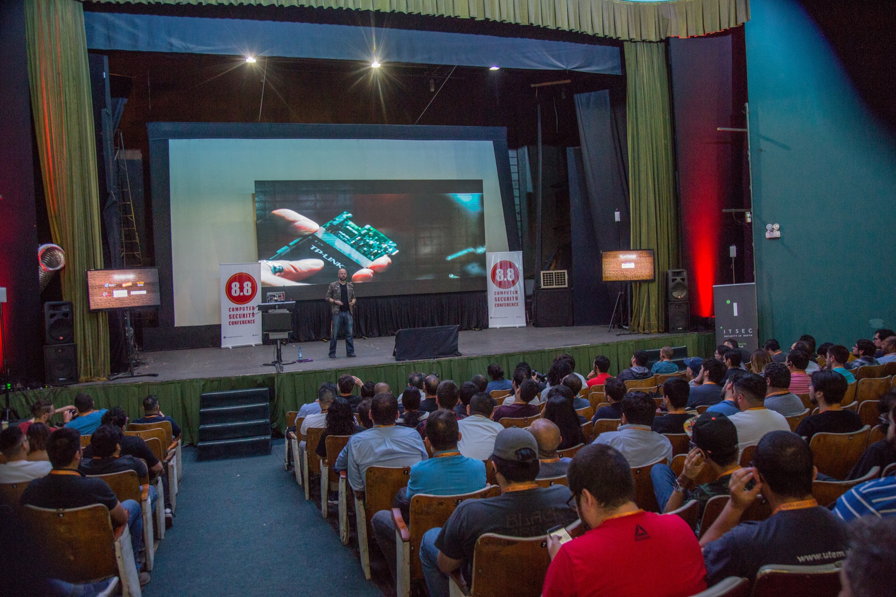

Acerca de
Conferencias
Cursos
Contacto

CONFERENCIA SOLIDARIA ONLINE
La ultima conferencia se realizo el 26 de junio 2020, debido a las cuarentenas y cuidados sanitarios para prevenir el contagio del Coronavirus, la población mundial recurre a lo digital para mantenerse funcionando desde el aislamiento .
Solidaria
forma parte del programa de actividades organizadas por
Computer Security Conference
, un evento 100% técnico y académico, que tiene como principal objetivo compartir información, democratizar el conocimiento y crear comunidad en torno a la Ciberseguridad.